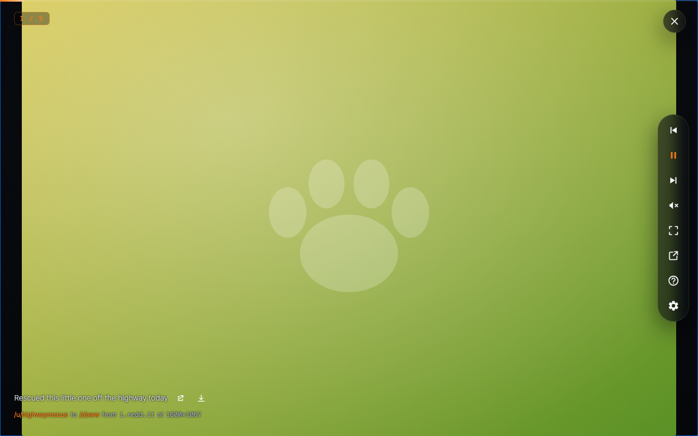

Built on your session
Reuses your logged-in Reddit — no API keys, no second account, nothing to re-subscribe to.
✦ Now showing — in your browser
The images and videos in the feed you're already watching — played back as a full-screen, keyboard-driven show. Open any feed and press play.
Free & open source · no account · no tracking · no servers

The fine print, up front
Reuses your logged-in Reddit — no API keys, no second account, nothing to re-subscribe to.
No analytics, no tracking, no developer servers. Your settings stay on your computer.
Pop the show into its own window, then AirPlay or Chromecast it to the TV.
Open any old.reddit.com or
www.reddit.com feed and press AltShiftS — it starts at the top of the
current view, in its own sort.
Direct images, galleries, Reddit-hosted video with audio, Redgifs, Imgur, Streamable, Giphy, Catbox, and crossposts — each rendered the right way.
Auto-advance on a timer or arrow through by hand; videos move on when they end. It follows Reddit's pagination so the show keeps going.
Filters reposts, crossposts, repeated galleries, and broken media before they show — even the same image re-uploaded under a new link, via a local perceptual hash.
Upvote or downvote the current post with ↑ / ↓, straight through your logged-in session. Download the media or open the original from the overlay.
Seconds per slide, transitions, pan & zoom for huge images, NSFW, the countdown bar — all from the overlay's gear, applied with no reload.
It isn't on the Firefox Add-ons site or Chrome Web Store yet, so you load the built extension yourself — in your browser, using your real Reddit session.
npm install
npm run build # Firefox → .output/firefox-mv3/
npm run build:chrome # Chrome → .output/chrome-mv3/
Firefox: about:debugging → Load
Temporary Add-on → pick
.output/firefox-mv3/manifest.json.
Chrome: chrome://extensions →
Developer mode → Load unpacked → select
.output/chrome-mv3/.
Open a feed (or r/SlideShowSpectacular) and hit the toolbar icon or AltShiftS.
Full steps — permanent install, signing — are in the README.